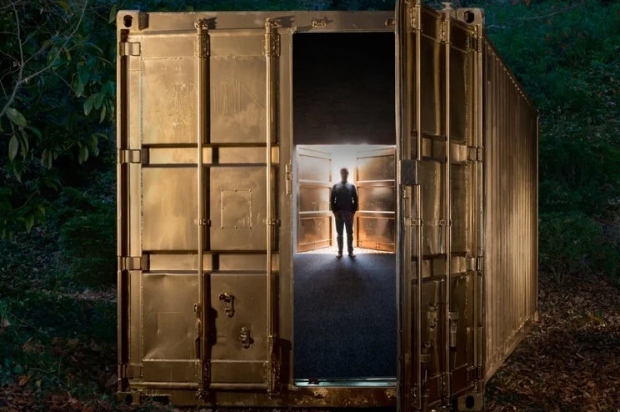

October 5-30, 2025
The Portal Project is a direct full-size video link between shipping containers in locations across the globe. During activations, it feels like these folks are in the room with you!
The conversations that take place are facilitated by trained moderators in the various locations. Some conversations focus on particular topics of import to those communities; others take the form of general "get to know you" sessions.
The Lawndale Pop-Up Spot is engaging with students, civic leaders, creatives, Lawndale residents, and others in sessions throughout October. We are excited to invite the general public to five public sessions:
- Sunday, October 5, 2:00-3:00 p.m. - Meet a Stranger in Johannesburg, South Africa! Note: this will take place during the opening festival of the Chicago Sukkah Design Festival, taking place on the same block!
- Saturday, October 18, 9:00-11:00 a.m. - Converse with artists in Addis Ababa, Ethiopia & enjoy traditional Ethiopian coffee service from Mella Cafe
- Saturday, October 18, 11:00 a.m. - 1:00 p.m. - Connect with Yoruba Praise poets in Lagos, Nigeria, and enjoy Nigerian cuisine & cooking demonstration from Dozzy
- Saturday, October 25, 4:00-6:00 p.m. - Dance party with musicians from Sao Vicente, Brazil
- Thursday, October 30, 5:00-7:00 p.m. - Dia de los Muertos / Halloween connection with Mexico City